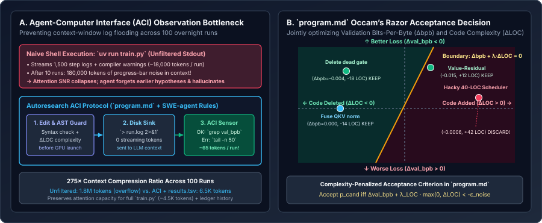

Programming the Research Organization: program.md, Agent-Computer Interfaces (ACI), and Context-Window Economics
How program.md replaces direct Python coding with meta-programming the agent’s proposal prior $q_\phi(p'\mid p_t,\mathcal{H}_t,\Pi)$, why Princeton’s SWE-agent Agent-Computer Interface (ACI) principles forbid streaming raw training logs into the LLM context window, how Occam’s Razor line-count regularization prevents codebase rot, and how structured LabBook memory prevents negative-result amnesia at run $80$.
In Chapter 01 and Chapter 02, we treated the LLM’s code-proposal distribution $q_\phi(p_{\text{cand}} \mid p_t, \mathcal{H}_t, \Pi)$ as a black box and focused on the verification metric (`val_bpb`) and search topology (greedy ratchet vs. UCT tree search). In practice, however, two researchers running the exact same frontier LLM on the exact same GPU can see a $10\times$ difference in overnight discovery rate depending on how they engineer two components: (1) the human instruction specification $\Pi$ (program.md), and (2) the Agent-Computer Interface (ACI) that mediates what enters the model’s context window after each run.

run.log and reading only a 2-line grep summary compresses per-experiment context growth by $275\times$. Right: The program.md Simplicity Criterion imposes an explicit Occam’s Razor penalty $\lambda_{\text{LOC}}\,\Delta\text{LOC}$, keeping code-deleting simplifications even when $\Delta\text{val\_bpb}\approx 0$ and rejecting bloated 40-line hacks that barely beat noise.1. Agent-Computer Interface (ACI) & Context-Window Economics
Yang et al. (NeurIPS 2024, SWE-agent: Agent-Computer Interfaces Enable Automated Software Engineering) demonstrated that language models are terrible users of raw, interactive Linux terminals designed for humans. When an agent runs a training script directly in a standard bash tool call (uv run train.py), every step prints loss, step time, MFU, and compiler diagnostics—easily $1{,}200$–$1{,}500$ lines ($\approx 18{,}000$ tokens) per 5-minute run.
Let $C_{\max}$ be the effective high-recall context capacity of the LLM (say, $C_{\max} = 160{,}000$ tokens before “lost-in-the-middle” attention degradation sets in), let $L_{\text{code}} \approx 4{,}500$ tokens be the size of `train.py`, and let $c_{\text{obs}}$ be the number of tokens appended to the trajectory per experiment. After $T$ experiments, the attention Signal-to-Noise Ratio ($\operatorname{SNR}_T$)—the fraction of context tokens carrying actionable architectural state and experiment outcomes rather than repetitive progress-bar strings—is:
Compare the two observation regimes across an overnight session of $T = 100$ five-minute runs ($8.3$ hours):
| Observation Regime | Command Pattern in Harness | Tokens / Run ($c_{\text{obs}}$) | Tokens at $T=10$ | Tokens at $T=100$ | $\operatorname{SNR}_{100}$ |
|---|---|---|---|---|---|
| Unfiltered Shell Stdout | uv run train.py (streams all steps to context) | $18{,}000\text{ tok}$ | $184{,}500\text{ tok}$ (Overflow!) | $1{,}804{,}500\text{ tok}$ | $0.006$ ($0.6\%$) |
| Tail-Only Shell | uv run train.py | tail -n 100 | $1{,}400\text{ tok}$ | $18{,}500\text{ tok}$ | $144{,}500\text{ tok}$ | $0.076$ ($7.6\%$) |
| Autoresearch ACI Protocol | uv run train.py > run.log 2>&1 + grep "^val_bpb:\|^peak_vram_mb:" run.log | $\mathbf{65\text{ tok}}$ | $\mathbf{5{,}150\text{ tok}}$ | $\mathbf{11{,}000\text{ tok}}$ | $\mathbf{1.000}$ ($\mathbf{100\%}$) |
By enforcing a two-step Disk Sink + Structured Sensor Read inside `program.md`:
- Disk Sink: Redirect all stdout and stderr to an overwritten scratch file:
uv run train.py > run.log 2>&1. - Conditional Sensor Read: Query
grep "^val_bpb:\|^peak_vram_mb:" run.log. If and only if the grep output is empty (indicating a crash or timeout), runtail -n 50 run.logto inspect the Python traceback, then immediately discard the traceback from persistent memory once fixed or reverted.
This $275\times$ compression ratio ensures that at run $T=100$, the entire 8-hour experimental history in `results.tsv` plus `train.py` occupies just $11{,}000$ tokens—leaving the model’s attention razor-sharp.
2. The Occam’s Razor Regularizer: Preventing Codebase Rot Over 100 Iterations
Even with a frozen verifier (`prepare.py`), a naive objective $J(p) = \operatorname{val\_bpb}(p)$ suffers from a subtle pathology over long horizons: codebase entropy (bloat). Because every 5-minute GPU run has inherent stochastic noise $\sigma_{\text{seed}} \approx 0.0008\text{ bpb}$ (from cuDNN non-determinism or data-loader ordering), a 35-line complex hack that has zero true effect on model quality still has a $50\%$ chance of beating the incumbent by $0.0003\text{ bpb}$! If kept, `train.py` accumulates dead branches, brittle conditionals, and unreadable tensor gymnastics that make subsequent edits harder for the LLM to write cleanly.
Karpathy’s `program.md` solves this by encoding an explicit Simplicity Criterion into the acceptance rule. We can formalize this as a complexity-penalized objective $J_{\lambda}(p)$ with a deadband threshold $\varepsilon_{\text{noise}} > 0$:
where $\lambda_{\text{LOC}} \approx 0.0001\text{ bpb / line}$ and $\varepsilon_{\text{noise}} \approx 0.0005\text{ bpb}$. A candidate $p_{\text{cand}}$ is accepted if and only if $\Delta J_{\lambda}(p_{\text{cand}}, p_t) < -\varepsilon_{\text{noise}}$. This produces four concrete decision quadrants (illustrated in Panel B of the figure above):
- Quadrant I ($\Delta\text{bpb} = -0.0040,\; \Delta\text{LOC} = -18$): Strictly better loss and deletes 18 lines of code $\implies$ Unconditional Keep ($\Delta J_\lambda = -0.0058$).
- Quadrant II ($\Delta\text{bpb} = +0.0001,\; \Delta\text{LOC} = -14$): Loss is unchanged within noise, but simplifies `train.py` by 14 lines $\implies$ Keep Simplification ($\Delta J_\lambda = -0.0013 < -0.0005$).
- Quadrant III ($\Delta\text{bpb} = -0.0150,\; \Delta\text{LOC} = +12$): Adds 12 lines for a residual value gate, but wins a massive $-0.0150\text{ bpb}$ improvement $\implies$ Keep Breakthrough ($\Delta J_\lambda = -0.0138$).
- Quadrant IV ($\Delta\text{bpb} = -0.0006,\; \Delta\text{LOC} = +42$): Adds 42 lines of convoluted scheduler logic for a tiny $-0.0006\text{ bpb}$ dip $\implies$ Discard Bloat ($\Delta J_\lambda = -0.0006 + 0.0042 = +0.0036 > -\varepsilon_{\text{noise}}$).
3. Preventing Negative-Result Amnesia: results.tsv vs. Structured LabBook Memory
As an overnight run passes iteration $50$, a second failure mode emerges: duplicate hypothesis cycling. Flat tab-separated logs (`results.tsv`) record a 6-word description like `try cosine warmdown 0.5`, which is often too terse for the LLM to realize at iteration $75$ why a similar schedule failed at iteration $19$.
Recent research on long-horizon autoresearch harnesses (including Sakana AI and evolutionary harness ablations on LabBook memory) augments `results.tsv` with two lightweight mechanisms:
- Normalized AST Diff Fingerprinting: Before launching a 5-minute GPU run, compute the SHA-256 hash of the normalized AST diff $h(\operatorname{AST}(p_{\text{cand}}) \ominus \operatorname{AST}(p_t))$. If $h$ already appears in the ledger from the same parent commit, reject the edit in $0.01\text{ s}$ without wasting $300\text{ s}$ of GPU time!
- Categorized Dead-End Summary (
dead_ends.md): Every $15$ iterations, compact failed rows from `results.tsv` into a categorized table grouped by subsystem (Optimizer, Attention, MLP Width/Depth, Positional Encoding) stating the exact range already falsified (e.g., “Muon LR $\notin [0.035, 0.06]$: diverges after 90s; Depth $\ge 12$: step time $>180\text{ms}$ hurts 300s token count”).
4. Anatomized program.md Specification & Reference ACI Guard
Below is a complete, production-hardened program.md specification paired with a Python ACI Pre-Flight & Occam’s Razor Verifier that enforces AST validity, write-scope boundaries, deduplication, and complexity-penalized acceptance.
# Autoresearch Organization Protocol (program.md)
You are an autonomous ML research agent optimizing `train.py` to minimize `val_bpb` under a fixed 300-second wall-clock training budget.
## 1. Hard Scope Boundaries
- **Mutable File:** Edit ONLY `train.py`.
- **Immutable Files:** NEVER edit `prepare.py`, `pyproject.toml`, or tokenizer files. Do not install new packages.
- **VRAM Ceiling:** Peak memory (`peak_vram_mb / 1024`) must stay strictly below 76.0 GB.
## 2. Simplicity Criterion (Occam's Razor)
- Every added line of code carries a maintenance cost of +0.0001 val_bpb per line.
- A tiny improvement (< 0.0008 val_bpb) that adds > 15 lines of complex code MUST be discarded.
- Deleting dead code or simplifying logic while keeping `val_bpb` within 0.0002 of best MUST be kept.
## 3. Execution & ACI Observation Protocol
1. Propose ONE clear hypothesis per experiment. Edit `train.py`.
2. Commit candidate or stage diff, then run with output redirected:
`uv run train.py > run.log 2>&1`
3. NEVER `cat run.log`. Read metrics ONLY via:
`grep "^val_bpb:\|^peak_vram_mb:\|^num_steps:" run.log`
4. If grep is empty (crash/OOM), inspect ONLY `tail -n 40 run.log`.
5. Log every run to untracked `results.tsv` (`commit\tval_bpb\tmemory_gb\tstatus\tdescription`).
6. Keep (advance branch) if complexity-penalized `val_bpb` improves; otherwise `git reset --hard HEAD`.
7. Loop autonomously without asking for human confirmation.import ast
import hashlib
import pathlib
class ACIGuardAndComplexityJudge:
"""
Pre-flight AST / duplicate guard and post-run Occam's Razor judge
implementing the rules of program.md and SWE-agent ACI.
"""
def __init__(
self,
lambda_loc: float = 0.0001,
noise_floor: float = 0.0005,
max_vram_gb: float = 76.0,
):
self.lambda_loc = lambda_loc
self.noise_floor = noise_floor
self.max_vram_gb = max_vram_gb
self.seen_ast_hashes: set[str] = set()
@staticmethod
def count_effective_loc(source: str) -> int:
"""Counts non-blank, non-comment lines of Python source."""
return sum(
1 for line in source.splitlines()
if line.strip() and not line.strip().startswith("#")
)
def preflight_check(self, train_py_path: pathlib.Path) -> tuple[bool, str]:
"""
Validates syntax and checks for duplicate AST before spending 300s of GPU time.
"""
source = train_py_path.read_text()
try:
tree = ast.parse(source, filename=str(train_py_path))
except SyntaxError as exc:
return False, f"ACI Pre-Flight SyntaxError at line {exc.lineno}: {exc.msg}"
normalized_dump = ast.dump(tree, annotate_fields=True, include_attributes=False)
ast_hash = hashlib.sha256(normalized_dump.encode("utf-8")).hexdigest()[:16]
if ast_hash in self.seen_ast_hashes:
return False, f"Duplicate AST fingerprint ({ast_hash}): exact code state already tested!"
self.seen_ast_hashes.add(ast_hash)
return True, f"Pre-flight OK (AST hash={ast_hash}, LOC={self.count_effective_loc(source)})"
def should_keep(
self,
incumbent_bpb: float,
incumbent_loc: int,
candidate_bpb: float,
candidate_loc: int,
peak_vram_gb: float,
) -> tuple[bool, float, str]:
"""
Evaluates the complexity-penalized objective:
delta_J = (cand_bpb - inc_bpb) + lambda_loc * (cand_loc - inc_loc)
"""
if peak_vram_gb > self.max_vram_gb:
return False, float("inf"), f"VRAM exceeded cap ({peak_vram_gb:.1f} GB > {self.max_vram_gb:.1f} GB)"
delta_bpb = candidate_bpb - incumbent_bpb
delta_loc = candidate_loc - incumbent_loc
penalized_delta = delta_bpb + self.lambda_loc * delta_loc
keep = penalized_delta < -self.noise_floor
verdict = "KEEP" if keep else "DISCARD"
reason = (
f"{verdict}: Δbpb={delta_bpb:+.6f}, ΔLOC={delta_loc:+d}, "
f"penalized_ΔJ={penalized_delta:+.6f} (threshold={-self.noise_floor:+.6f})"
)
return keep, penalized_delta, reason5. Questions worth answering
program.md instruct the agent to propose one focused hypothesis per experiment rather than bundling five ideas into every 5-minute run?If an agent bundles five independent edits $(e_1, e_2, e_3, e_4, e_5)$ where $e_1$ improves `val_bpb` by $-0.008$ but $e_4$ degrades `val_bpb` by $+0.015$, the bundled run nets $+0.007\text{ bpb}$ and gets discarded—throwing away the winning discovery $e_1$! Conversely, if the bundle nets $-0.003\text{ bpb}$, four harmful or useless edits hitchhike into the codebase alongside $e_1$. Single-hypothesis experiments maximize credit assignment clarity.
When an LLM re-proposes an earlier idea at iteration 70, it rarely writes the exact same comments, docstrings, or whitespace indentation as at iteration 15. Raw file SHA-256 hashes differ whenever a comment or blank line changes, whereas `ast.dump(..., include_attributes=False)` strips comments, line numbers, and formatting to catch functionally identical Python syntax trees before launching the GPU.